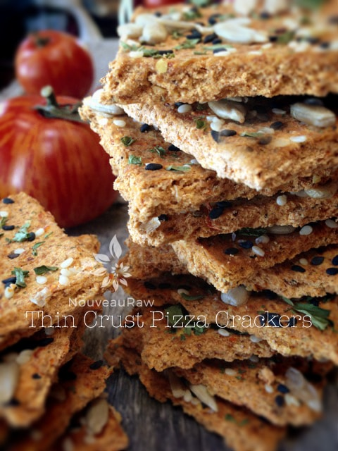

Thin Crust Pizza Crackers
Thin Crust Pizza CrackersCreating new recipes is only half the battle, well not sure I would call it a battle… the other half is coming up with what to name my new creation. In culinary school we were taught that the name of a recipe ought to reflect what is in the recipe. Though I do agree with this, it can get quite convoluted at times. So, in reality I should name this cracker, Garlic and Sun-dried Tomato with Basil, Almond Pulp Based Crackers coated with Sunflower and Sesame Seeds. Shew.

~ raw, vegan, gluten-free ~
I take a step back and envision myself at a potluck and ten different people approach me asking what those amazing, raw crackers are that disappearing like a Blue Light Special at K-Mart… Would I want to repeat “Oh those are called Garlic and Sun-dried Tomato with Basil, Almond Pulp Based Crackers coated with Sunflower and Sesame Seeds!”…. ten times??!! Then I ask myself, “Could I even remember what they were called the first time I was asked?” lol
A recipe name should give a person some sort of hint as to what they can expect. The word cracker is in the recipe title, so we understand that this recipe will result in a cracker. But, we need more specific description. We need a flavor profile, something to get the saliva glands working. As one of my readers would say… “this recipe makes my cheeks squirt!”
As they were in the dehydrator, the rich aromas of Italian herbs had my tummy grumbling. I woke up several times throughout the night smelling the sun-dried tomatoes, the garlic and the oregano, all of which reminded me of my mother’s famous homemade spaghetti, which could easily be doubled as an amazing pizza sauce. I fell back asleep feeling all warm and fuzzy inside.
BUT, I woke up hungry! :) The aromatic scent awakened my groggy head and straight to the pantry I went. The closer I got to the dehydrators, the more the intense the aromas became. I took the front door off of the dehydrator and stood there, eyes closed, inhaling deeply, as the warm air brushed over the tops of the crackers, enveloping me in 115 degrees of warm, oooey, gooey, Italian smelling goodness! I didn’t want to leave that spot for several… days. lol

I mustered up enough willpower to allow them to cool back down to room temperature. It was time the “snap” test. With a firm grip, holding the cracker by the left edge and the right edge, I gave it a little upward pressure… SNAP! Aaah, perfect’o!
I got the smell down, the snap down, now for the taste test. It took one bite. As I chewed, I closed my eyes and a smile spread across my lips… it was as though I were eating a thin crust pizza! I know I got a little winded sharing all of this and I could have just said, “Tastes great!” But what does that really tell you? I wanted to take you on a journey before you even started making this recipe.
The key to success in this recipe (any recipe actually) is the quality of ingredients used. I used cherry tomatoes because they are more on the sweeter side than other varieties. And since they are the key ingredient for this recipe, please make sure that you start off by using fresh, ripe, tomatoes.
Bland tomatoes make for bland crackers. Along with fresh tomatoes, I also added in sun-dried tomatoes. Not only do they give extra texture to the cracker, they are quite intense, concentrated, and slightly salty. Make sure that you don’t use the kind packed in oil or in any liquid. But do know that you will need to rehydrate these in warm water so that they blend better in the recipe.
For the structure of the cracker, I used almond pulp. I love using this for cracker recipes because it gives the cracker a lightness, firmness, and crunch. I haven’t tried whole, ground nuts or seeds in this recipe but you are welcome to experiment if you choose not to use nut pulp. Substitutions will alter the flavor and texture of the cracker. Ok, it’s time to get “crack-a-laking”!
Crackers:
- 2 1/2 cups halved cherry tomatoes
- 1/2 cup sun-dried tomatoes, rehydrated
- 2 Tbsp cold pressed olive oil
- 1 clove garlic
- 2 tsp dried oregano
- 2 tsp dried basil
- 2 tsp raw agave nectar
- 1 tsp Himalayan pink salt
- 4 cups packed, moist almond pulp
- 1/2 cup ground flax
Toppings:
- Black and white sesame seeds
- sunflower seeds
- coarse sea salt
- dried parsley
Preparation:
- Rehydrate the sun-dried tomatoes in enough warm water to cover them.
- Set aside for 15 minutes or until soft.
- Once done, drain the soak water and squeeze out the excess.
- In the food processor fitted with the “S” blade, combine the cherry tomatoes, sun-dried tomatoes, olive oil, garlic, oregano, basil, agave, and salt.
- Process until it resembles a sauce.
- Pour into a medium-sized bowl.
- Add the almond pulp and flax. With your hands, mix everything together really well.
- Spread the batter out on the teflex sheets that come with the dehydrator.
- Spread to about 1/4″ in thickness.
- Score the crackers then transfer to the mesh sheet by placing a mesh sheet on top of the batter, followed by another dehydrator tray.
- Flip everything over in one fluid motion.
- Remove the tray and peel off the teflex.
- Lightly press the toppings into the cracker dough with the palm of your hand.
- Dehydrate at 145 (F) degrees for 1 hour then reduce to 115 (F) degrees and continue to dehydrate for about 6 -8 hours or until dry.
- Cool to room air temperature and then store in an airtight container for several weeks.
Culinary Explanations:
- Why do I start the dehydrator at 145 degrees (F)? Click (here) to learn the reason behind this.
- When working with fresh ingredients it is important to taste test as you build a recipe. Learn why (here).
- Don’t own a dehydrator? Learn how to use your oven (here). I do however truly believe that it is a worthwhile investment. Click (here) to learn what I use.
© AmieSue.com